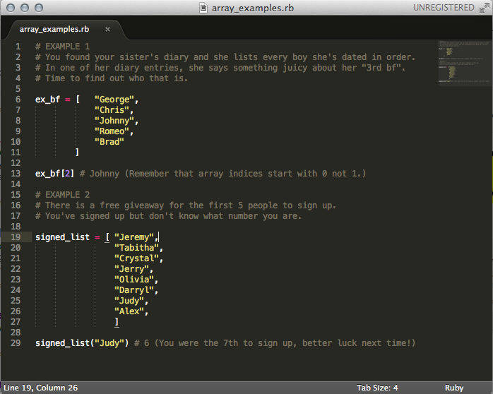
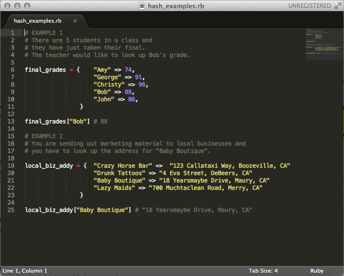

Arrays
Arrays are basically a list of object and each object in an array is referred to as an element. These elements can consist of strings, integers, hashes, symbols, fixnum and even other arrays. The elements are ordered and integer-indexed, meaning that each has a number to indicate its location in the array. An index of 0 refers the first object on the list, while an index of 1 refers to the second object, an index 2 for the third, etc. It's a bit confusing to start with 0 but that's how ruby and many computer programming languages roll. A negative index like -1 refers to the last element in an array.
Hashes
Hashes are similar to arrays and are sometimes known as associative arrays, maps or dictionaries. It is a list of objects but instead of an integer-indexed order, hashes allow you to tag a key object to a value object. It's like assigning a name to a thing and when you call on that name, it returns the associated thing. When you call on a key that doesn't exist in the hash, it returns a defaulted "nil" value.
When to use what
The biggest factor to consider when deciding between arrays and hash are whether the order of the elements matter.
Use an array...
If you need to maintain order. This is based on the listed order not sorted order.
If you need to access contents randomly by a number.
If you need to go through the contents linearly.
Use a hash...
If you have to retrieve values based on an identifier like names, addresses or age.
If you don't need things to be in order.
If you are going to be adding and removing elements and their keys.